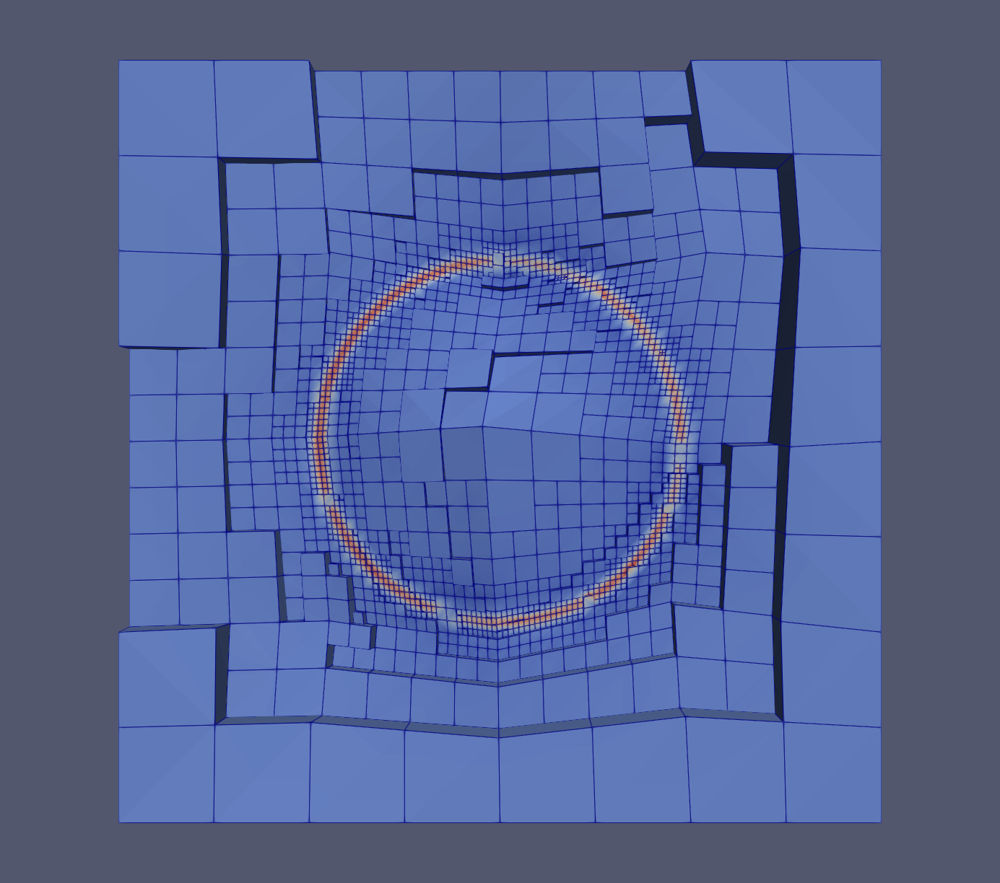

Adaptive Heat Equation

Introduction
This tutorial demonstrates adaptive mesh refinement (AMR) for a 3D heat equation using Ferrite's ForestBWG — a p4est-style forest-of-octrees data structure. We solve a Poisson problem with a manufactured solution that has a sharp spherical feature, driving refinement with a Zienkiewicz-Zhu (ZZ) error estimator and Dörfler marking.
The strong form of the problem reads
\[ -\Delta u = f \quad \textbf{x} \in \Omega = [-1,1]^3,\]
with homogeneous Dirichlet boundary conditions $u = 0$ on $\partial\Omega$. The right-hand side $f$ is chosen via the method of manufactured solutions so that the exact solution is a Gaussian ring
\[ u_{\mathrm{exact}}(\textbf{x}) = \exp\!\Bigl(-\bigl(\tfrac{\|\textbf{x}\|-0.5}{\varepsilon}\bigr)^2\Bigr), \quad \varepsilon = 0.02,\]
which is essentially zero at the boundary and has a sharp peak on the sphere $\|\textbf{x}\|=0.5$.
Commented Program
First we load the required packages.
using Ferrite, SparseArrays, IterativeSolvers, WriteVTKGrid setup
We create a structured 4×4×4 hexahedral grid on $[-1,1]^3$, apply a random perturbation to the interior nodes (to test robustness on deformed meshes), and wrap it in a ForestBWG that allows up to 10 levels of refinement. One uniform refinement gives us a reasonable starting mesh of 512 cells.
grid = generate_grid(Hexahedron, (4, 4, 4));
function random_deformation_field(x)
if any(x .≈ -1.0) || any(x .≈ 1.0)
return x
else
Vec{3}(x .+ (rand(3) .- 0.5) * 0.15)
end
end
transform_coordinates!(grid, random_deformation_field)
grid = ForestBWG(grid, 10)
Ferrite.AMR.refine_all!(grid, 1)Manufactured solution
The exact solution is a Gaussian ring concentrated on the sphere $\|\textbf{x}\|=0.5$ with width $\varepsilon = 0.02$. It is essentially zero at the origin and at the boundary of the cube, so homogeneous Dirichlet conditions are appropriate. The right-hand side is obtained by applying the negative Laplacian via automatic differentiation (Tensors.laplace).
analytical_solution(x) = exp(-((norm(x) - 0.5) / 0.02)^2)
analytical_rhs(x) = -laplace(analytical_solution, x)analytical_rhs (generic function with 1 method)Element assembly
Standard Galerkin assembly for the Poisson equation. For each quadrature point we evaluate the manufactured right-hand side at the physical coordinate.
function assemble_cell!(ke, fe, cellvalues, ue, coords)
fill!(ke, 0.0)
fill!(fe, 0.0)
n_basefuncs = getnbasefunctions(cellvalues)
for q_point in 1:getnquadpoints(cellvalues)
x = spatial_coordinate(cellvalues, q_point, coords)
dΩ = getdetJdV(cellvalues, q_point)
for i in 1:n_basefuncs
Nᵢ = shape_value(cellvalues, q_point, i)
∇Nᵢ = shape_gradient(cellvalues, q_point, i)
fe[i] += analytical_rhs(x) * Nᵢ * dΩ
for j in 1:n_basefuncs
∇Nⱼ = shape_gradient(cellvalues, q_point, j)
ke[i, j] += ∇Nⱼ ⋅ ∇Nᵢ * dΩ
end
end
end
return
endassemble_cell! (generic function with 1 method)Global assembly
Loop over all cells, reinitialize CellValues for the current cell geometry, compute the element contribution and assemble into the global system.
function assemble_global!(K, f, a, dh, cellvalues)
n_basefuncs = getnbasefunctions(cellvalues)
ke = zeros(n_basefuncs, n_basefuncs)
fe = zeros(n_basefuncs)
assembler = start_assemble(K, f)
for cell in CellIterator(dh)
reinit!(cellvalues, cell)
@views ue = a[celldofs(cell)]
coords = getcoordinates(cell)
assemble_cell!(ke, fe, cellvalues, ue, coords)
assemble!(assembler, celldofs(cell), ke, fe)
end
return K, f
endassemble_global! (generic function with 1 method)Solve on a single grid
Given a (non-conforming) grid, set up the FE problem with trilinear hexahedral elements and solve it. Homogeneous Dirichlet conditions are applied on all six boundary faces. A ConformityConstraint ensures that the solution is continuous across hanging nodes introduced by adaptive refinement. We use a conjugate gradient solver since the system is symmetric positive definite.
function solve(grid)
dim = 3
order = 1
ip = Lagrange{RefHexahedron, order}()
qr = QuadratureRule{RefHexahedron}(2)
cellvalues = CellValues(qr, ip)
dh = DofHandler(grid)
add!(dh, :u, ip)
close!(dh)
# Dirichlet BCs on all boundary faces, plus hanging node constraints
ch = ConstraintHandler(dh)
for face in ("top", "bottom", "left", "right", "front", "back")
add!(ch, Dirichlet(:u, getfacetset(grid, face), (x, t) -> 0.0))
end
add!(ch, ConformityConstraint(:u))
close!(ch)
K = allocate_matrix(dh, ch)
f = zeros(ndofs(dh))
a = zeros(ndofs(dh))
assemble_global!(K, f, a, dh, cellvalues)
apply!(K, f, ch)
u = cg(K, f; maxiter = 2000)
apply!(u, ch)
return u, dh, ch, cellvalues
endsolve (generic function with 1 method)Adaptive solve loop
The adaptive loop repeats: solve, estimate, mark, refine.
Error estimation (Zienkiewicz-Zhu). The ZZ error estimator is a recovery-based a posteriori error estimator. The idea is to compare the raw finite element flux $\sigma_h = \nabla u_h$ against a recovered (smoothed) flux $\sigma^*$ obtained by L2-projecting the element-wise gradients onto a continuous nodal field. Where the smoothed flux differs significantly from the raw flux, the local approximation is poor and refinement is needed:
\[ \eta_K^2 = \int_K \|\sigma_h - \sigma^*\|^2 \, \mathrm{d}\Omega.\]
Dörfler marking. Rather than using an absolute error threshold (which requires problem-dependent tuning), we use Dörfler (bulk) marking: sort cells by decreasing error and mark the smallest set whose cumulative error exceeds a fraction $\theta$ of the total. This guarantees a fixed fraction of the error is addressed in each step.
function solve_adaptive(initial_grid)
ip = Lagrange{RefHexahedron, 1}()
qr = QuadratureRule{RefHexahedron}(2)
finished = false
i = 1
grid = deepcopy(initial_grid)
pvd = paraview_collection("heat_amr")
θ = 0.5
while !finished && i <= 3
@show i
# Materialize the forest into a NonConformingGrid and solve
transfered_grid = Ferrite.creategrid(grid)
u, dh, ch, cv = solve(transfered_grid)
# Step 1: Compute the raw FE flux σ_h = ∇u_h at each quadrature point
σ_gp = Vector{Vector{Vec{3, Float64}}}()
for cell in CellIterator(dh)
reinit!(cv, cell)
ue = u[celldofs(cell)]
σ_cell = Vec{3, Float64}[]
for q_point in 1:getnquadpoints(cv)
push!(σ_cell, function_gradient(cv, q_point, ue))
end
push!(σ_gp, σ_cell)
end
# Step 2: Recover a smooth flux field σ* by L2-projecting the raw
# quadrature-point fluxes onto a continuous nodal field.
projector = L2Projector(ip, transfered_grid)
σ_dof = project(projector, σ_gp, qr)
# Step 3: Evaluate the ZZ error indicator per cell.
# For each cell we compare the recovered flux σ* (evaluated from the
# projected nodal values) against the raw flux σ_h at each quadrature point.
cv_σ = CellValues(qr, ip^3)
error_arr = zeros(getncells(transfered_grid))
for (cellid, cell) in enumerate(CellIterator(projector.dh))
reinit!(cv_σ, cell)
@views σe = σ_dof[celldofs(cell)]
for q_point in 1:getnquadpoints(cv_σ)
σ_star = function_value(cv_σ, q_point, reinterpret(Float64, σe))
σ_h = σ_gp[cellid][q_point]
error_arr[cellid] += norm(σ_star - σ_h)^2 * getdetJdV(cv_σ, q_point)
end
end
# Dörfler marking: sort cells by error and mark the smallest set
# whose cumulative error accounts for a fraction θ of the total.
total = sum(error_arr)
cells_to_refine = Int[]
if total > 0
perm = sortperm(error_arr; rev = true)
target = θ * total
acc = 0.0
for idx in perm
push!(cells_to_refine, idx)
acc += error_arr[idx]
acc >= target && break
end
end
@info "AMR step $i: $(length(cells_to_refine))/$(getncells(transfered_grid)) cells marked, total error = $total"
# Export the solution and cell-wise error to VTK for visualization
VTKGridFile("heat_amr-$i", dh) do vtk
write_solution(vtk, dh, u)
write_cell_data(vtk, error_arr, "error")
pvd[i] = vtk
end
# Refine marked cells and enforce 2:1 balance across the forest
Ferrite.refine!(grid, cells_to_refine)
Ferrite.balanceforest!(grid)
i += 1
if isempty(cells_to_refine)
finished = true
end
end
return vtk_save(pvd)
endsolve_adaptive (generic function with 1 method)Run
Finally, we call solve_adaptive with our initial forest grid.
solve_adaptive(grid)4-element Vector{String}:
"heat_amr.pvd"
"heat_amr-1.vtu"
"heat_amr-2.vtu"
"heat_amr-3.vtu"This page was generated using Literate.jl.